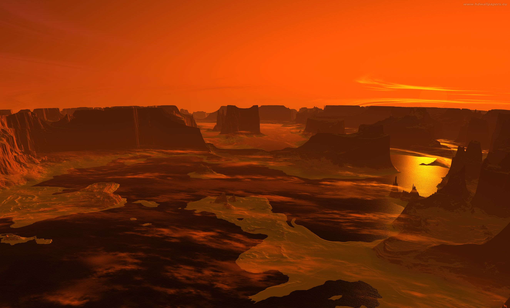
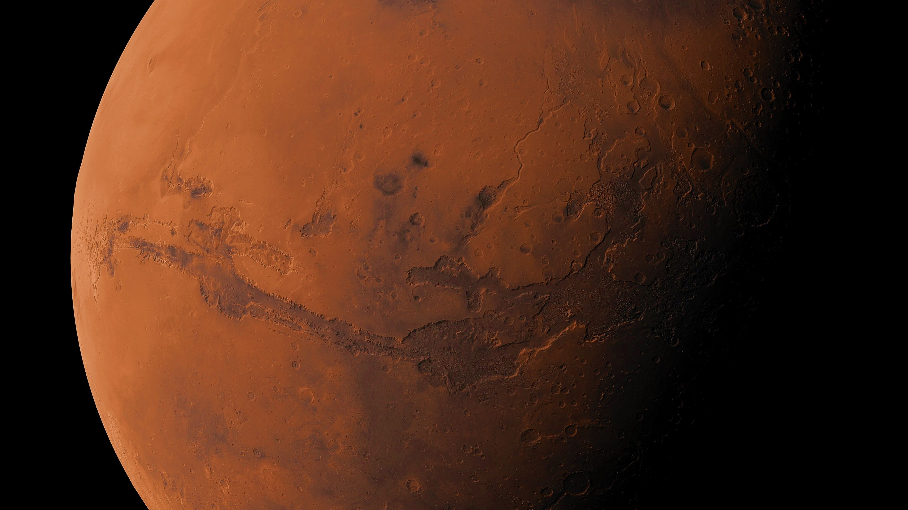
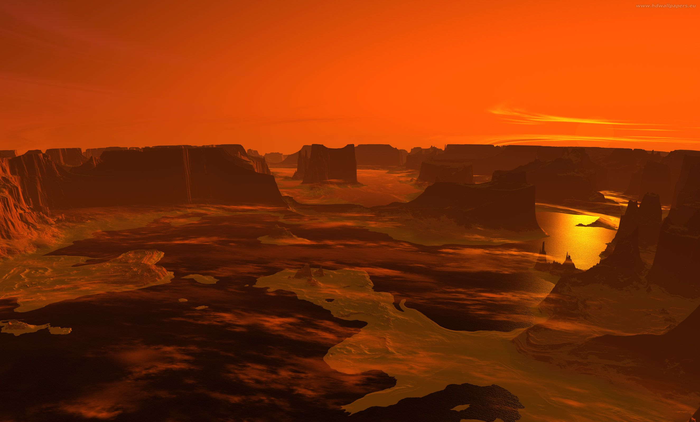
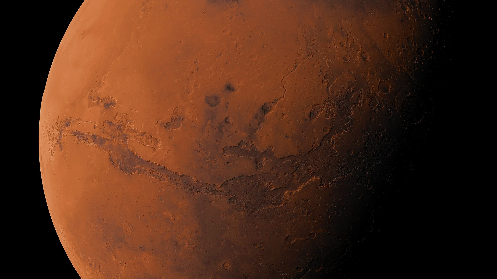

| Equatorial circumference | 13,256 miles |
|---|---|
| Surface Area | 55,900,000 square miles |
| Density | 3.93 g/cm3 | Volume | 163,000,000,000 km3 |
| Radius | 2,106.1 miles |
| Mass | 6.4171E23 kg |
About Mars
Mars is the fourth planet from the Sun in our solar system and is often referred to as the "Red Planet" due to its reddish appearance. It is a terrestrial planet with a thin atmosphere, primarily composed of carbon dioxide. Mars is known for its diverse surface features, including large volcanoes, expansive canyons, and polar ice caps.
Composition
Mars has a diverse composition, including silicate rock, iron oxide (rust), water ice, permafrost, regolith (loose surface material), a thin atmosphere rich in carbon dioxide, and trace gases. This information is derived from data collected by spacecraft missions such as NASA's rovers and is crucial for understanding Mars' geology, climate, and potential habitability. For the latest and most accurate information, it's recommended to refer to official sources like NASA or the European Space Agency.
Structure
A. Crust
Mars has a solid crust composed of various silicate rocks. The composition is diverse, including basaltic rocks on the plains and older, more varied rocks in the southern hemisphere.
B. Mantle
Beneath the Mars' crust is the mantle, a layer of solid rock that extends to a depth of about 1,000 kilometers (621 miles). The mantle is composed mainly of silicate minerals.
C. Core
Mars has a partially liquid iron-nickel core, similar to Earth. The size and composition of the core are not as well-constrained as Earth's, but it is believed to contribute to the planet's weak magnetic field..
Media
Gallery
 


